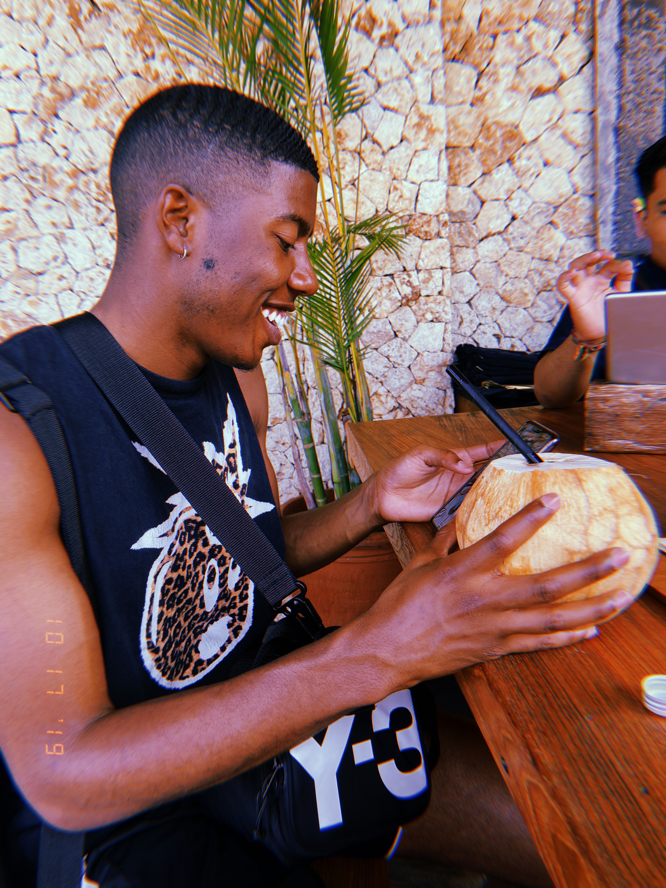

About Me

Hello! My Name is Jeffey Durante but, most people call me L.J. I Have no prior experience with any type of informatin technology except google so this should be amazing.
My education was from Old domnion unversity where i received my Bachelors of Business management.
I am pretty easy going and laid back. I feel like once I complete this course my personality will help with the stress of this career field.
Here below are my linkedin and github pages to view.